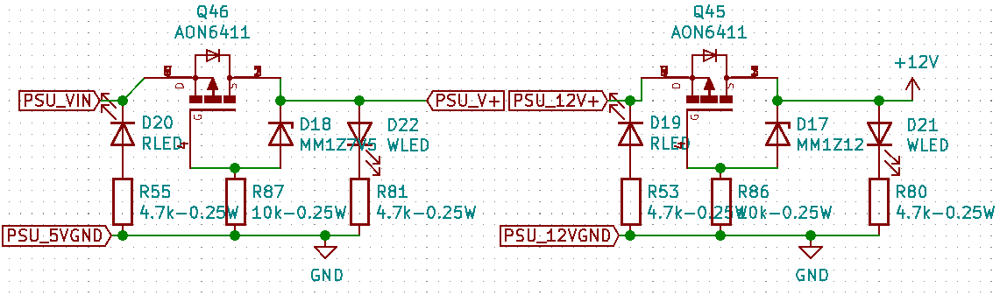
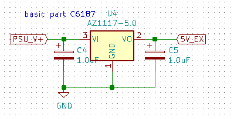
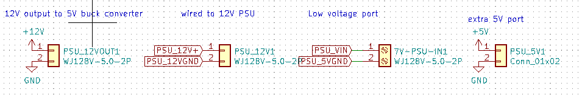
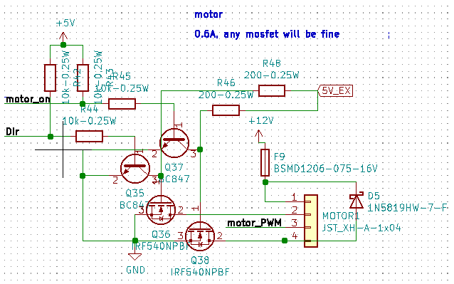
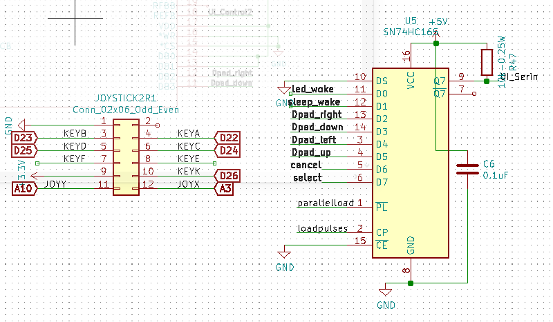
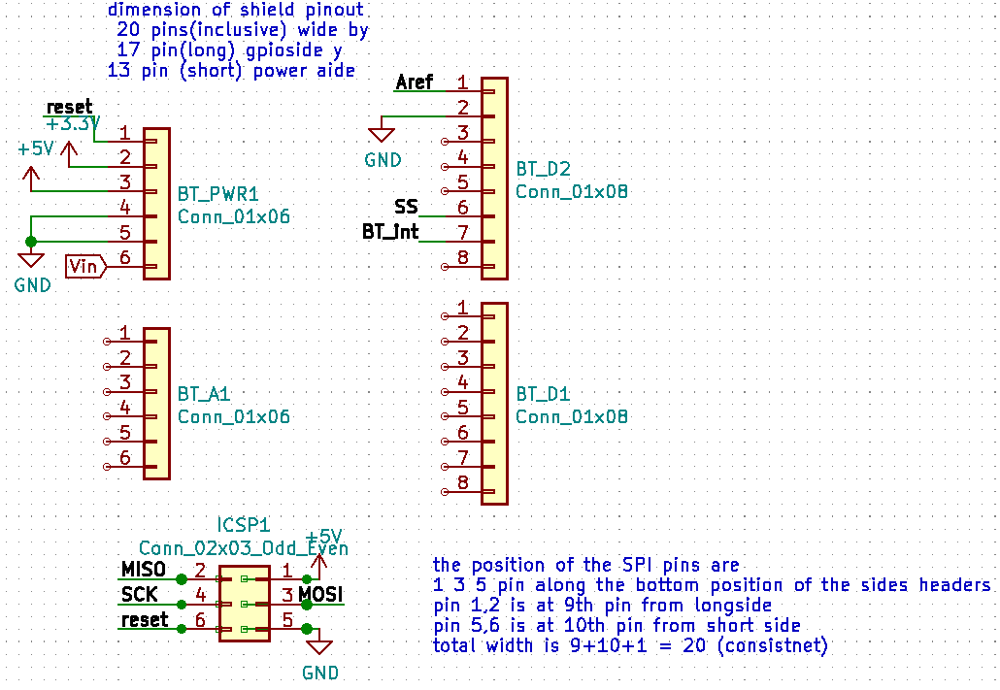
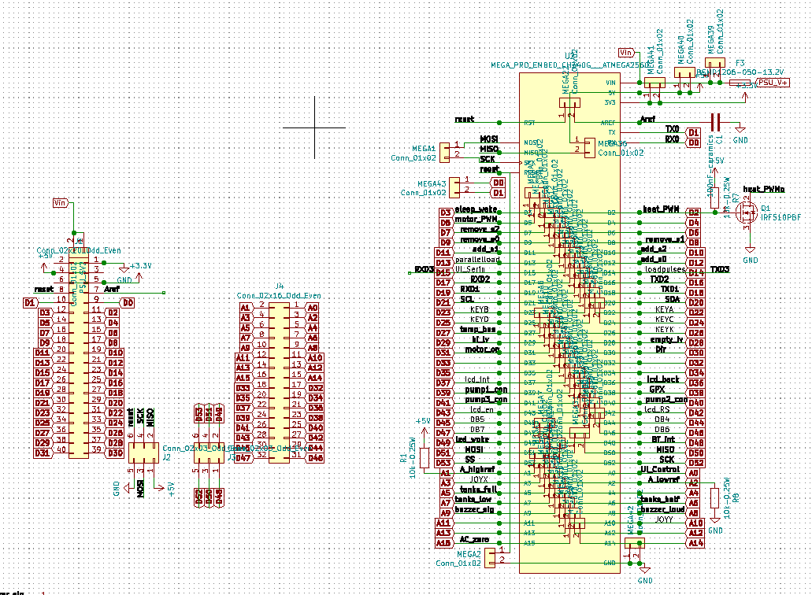
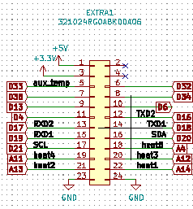

V0.92 (in machine after )
Changes:
1) Removed pull up resistor for direction pin of the motor
2) Number of extra pins reduced
3) One additional IDC socket for joystick shield
4) Pin out header socket for USB host shield, required one additional stacking pins
5) Removed the extra ICSP pins, it is now used by the USB host shield
6) Use one 5V LDO (AMS1117) onboard required low voltage input of at least 6.5V
7) Arduino mage gets power from Vin around 6.5V and signals powered from onboard 5V LDO (AMS1117)
8) One PISO shift registers for Dpad buttons input are available instead of the R-2R ladder analog output to buttons
9) Red onboard LED for reverse voltage input for both 12V and low voltage terminals
10) Green onboard LED for forward voltage input for both 12V and low voltage terminals
11) Mounting holes increase from M3 to M4, holes position remains the same
12) Size of board increase in the X-axis
Power circuit

Both 12V and low voltage (6.5V) from the external switch converter are reverse polarity protected with low on resistance p-channel MOSFET and Zener diode.
When reverse polarity occurred, the pMOSFET will shut down the main circuit from the high voltage side, but the red SMD LED will turn on as an indication for the user that they had reversed the input leads
When the correct polarity is inserted, the pMOSFET will shunt the high voltage side leads, and activate the green SMD LED.

One additional 5V regulator is implemented to share the loads required by the 5V sources. This is the same chip as the 5V LDO on the Arduino mega pro mini
In the schematics diagram, 5V is the one powered by the Arduino, while all 5V_EX connection is powered by this additional chip.

There are four power connectors, one is the input from the 12V PSU, one is the 12V output after the reverse polarity protection, one is low voltage input from the buck converter, and the last one is an extra header for a 5V reference.
Pumps control
 Remain unchanged
Remain unchanged
Motor control

The only changes made are the direction pin of the motor. Now the pin is left floating/disconnected if it is not shorted to GND for backward direction
The change is made because the motor we used is not a raw motor, it is a DIR and PWM controlled motor. Therefore, there is a controller board inside the motor assembly. Depending on the quality of the motor, if there is a current path inside the motor assembly, the additional pull up resistor outside the assembly will affect the voltage level on that pin.
Also, according to the product datasheet, the DIR pin could be left disconnected for forward direction, thus proving there is an internal pull up inside the motor assembly.
The rest is the same as the previous version.
Solenoid valves control
 Same as previously
Same as previously
User interface


The Dpad function works as previously
In v0.92, there are two additional components added for the user interface

Firstly, the 12ways IDC connector allows the microcontroller to interface with Arduino joystick shield. Since we don't plan to use key E and F, they are left disconnected with the microcontroller here. This is a optional addon, the Dpad functions as usual without the connection with joystick shield, and the joystick shield will work simultaneously with the Dpad.
The addition of a parallel in and series out shift register allows pure digital signal to be transmitted to the microcontroller for all the Dpad buttons. This required additional programming that allowed the signal to be read via the UI_Serin input for all 8 buttons.
Heating element

Same as previously
But, DO note that MOC3020, and 4Nm5 might need to be changed to other equivalent components due to availability.
Arduino USB Host shield dock

This layout allows the Arduino USB Host shield to be connected simply by docking it over these docking headers. Most of the bypassing digital and analog pins from the shield are unuse. They are included for structural reasons.
The USB host shield converts the USB signal into SPI interface to the microcontroller.
This has been tested and used with a Bluetooth USB dongle, and communicates with a PS5 controller to act as the user interface to navigate the menu.
Sensors

Same as previously
Buzzer

Same as previously
Communication Ports

Same as previously
Microcontroller pinout
The left side of the picture is the header arrangement on the board for docking the arduino board. The right is the labeled pinout of the Arduino.
A additional fuse is added to the Vin to the Arduino board, since in v0.9, power is feed via the 5Vport of the Arduino bypassing the 5V LDO onboard.

Extra pin unused pin is group to an extra IDC header for future expansion. This has been significantly reduced due to the module expansion and component compatibility from v0.9 to v0.92.
The firmware is made backward compatible, so the program being uploaded to this board that processes all the added component to this iteration of PCB can also be uploaded to v0.9 without causing a bug. However, all new features in v0.92 will not reflect on v0.9 unless the corresponding extra pins are wired externally.